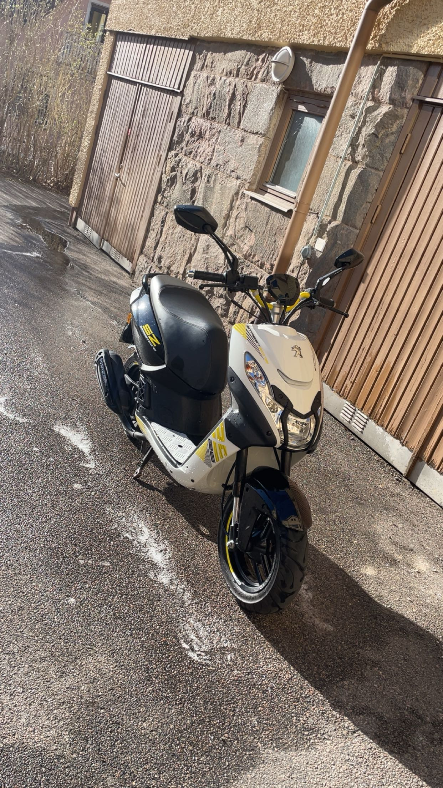
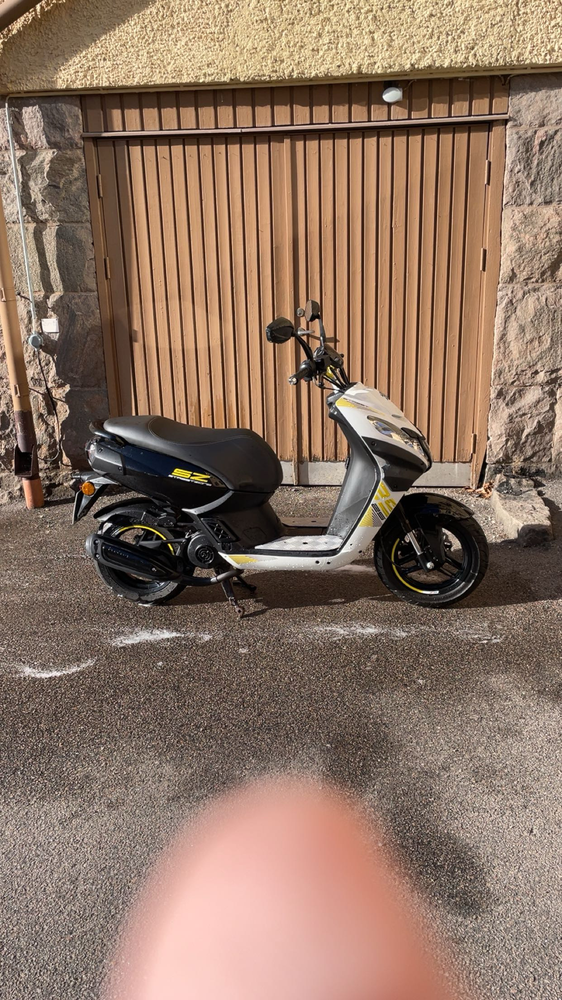
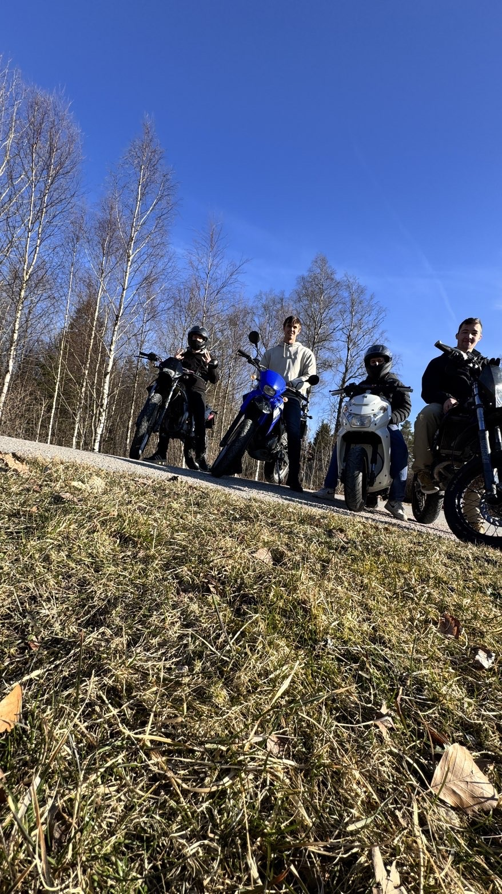
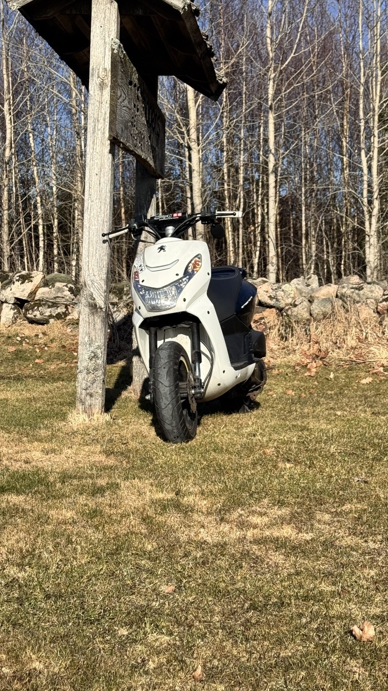
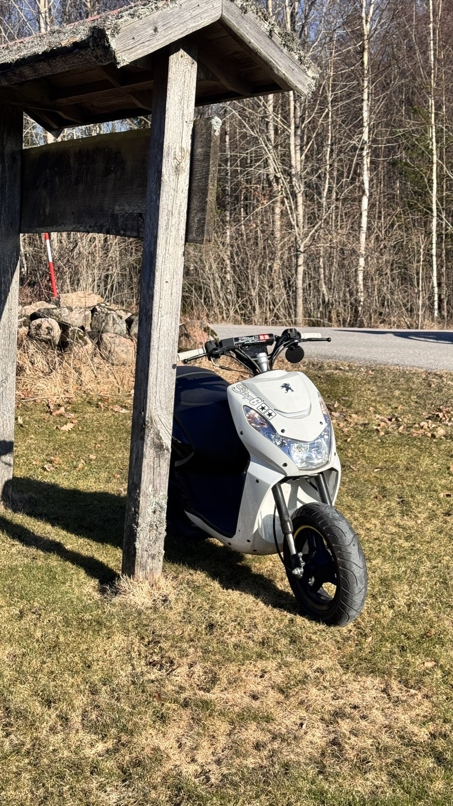

Jag köpte min moppe för ett år sedan i mars. Då såg den ut så här:


Den såg ut så här ganska länge, men till slut bestämde jag mig för att ta bort kraschpuckarna, bakläppen, dekaler, backspeglar, fotplattor, framstänkan med mera.
Sedan la jag till nya dekaler, ny backspegel, ny ECU med mera.
Bilder med polare




Sidor som hjälpt extremt mycket
Sidor som hjälpt extremt mycket inom styling och "annat" med moppen: